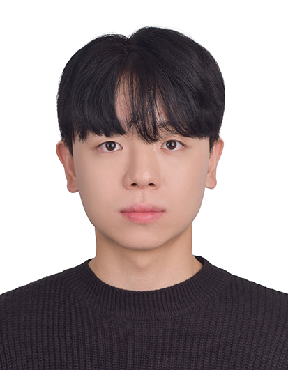

장–뇌 축 · 우울증
Negr1 결핍과 대장염: 성별 특이적 장 장벽·소포체 스트레스
Negr1−/− 마우스 DSS 대장염 모델에서 tight junction, 염증 사이토카인, ER stress·apoptosis 마커의 성별 차이를 규명
Jin Gyeom Kim
Ph.D. Candidate · Integrated M.S.–Ph.D. Program
Dept. of Food and Nutrition · Glocal Life-care Convergence Program
Gut–Brain Axis · Microbiome · Depression
Environmental Toxicants · Functional Food
About

김진겸 (Jin Gyeom Kim)
석박사통합과정 (박사과정) · 인체영양학실험실 (지도교수 조진아)
Negr1 결핍 마우스의 대장염 모델, 우울증 환자 유래 분변 미생물 이식(FMT), 플라스틱 가소제 대사산물(2-EHA)의 신경·장 독성까지 세포–동물–인체 시료를 넘나들며 장–뇌 축의 기전을 규명하고 있습니다.
BK21 글로컬라이프케어 혁신인재양성사업단 지원대학원생이며, University of Hawaiʻi at Mānoa 해외 연수(2025, 2026)와 CNU-Star Fellowship 연구과제를 수행했습니다.
Research
Negr1−/− 마우스 DSS 대장염 모델에서 tight junction, 염증 사이토카인, ER stress·apoptosis 마커의 성별 차이를 규명
항생제로 장내균을 제거한 마우스에 HDRS ≥19 공여자 분변을 이식, 9종 행동실험으로 공간 학습·기억 저하 확인 (우수포스터상)
MDD 환자 혈청 GC-MS 대사체 분석에서 2-EHA 증가 확인, HT22·BV2·Caco-2·지방세포에서 독성·지질대사·장 염증 영향 분석 (CNU-Star Fellowship)
추출법 8종 비교, RAW 264.7 항염증 및 zebrafish 배아 ROS 억제 효과 검증 — Antioxidants 제1저자 논문
대사와 정서 행동을 함께 평가 — Clinical Nutrition Research 제1저자 논문
Mi-Jeong Lee 교수 연구실 — 2025년 microbiome 분석·Caco-2 2-EHA 실험, 2026년 Caco-2·HT22 모델로 2-EHA의 장–뇌 축 작용기전(ROS·지질과산화·ferroptosis·염증 신호) 연구
Achievements
Expertise
Murine & zebrafish models
Depression · anxiety · cognition
Gut · brain · immune · adipose
Gene · protein · signaling
Live-cell imaging · metabolomics
Extraction · antioxidant assays · statistics